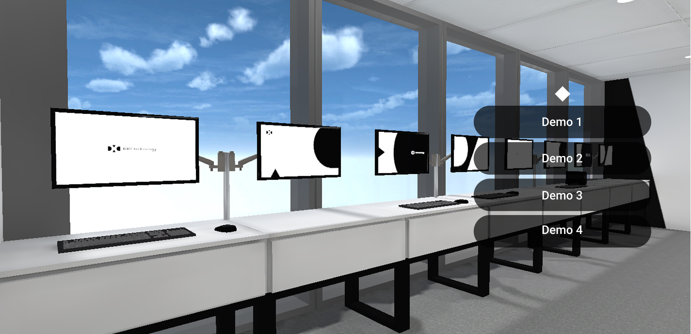

Web App · Immersive Experience Design
Virtual Digital Innovation Lab
Reimagining lab visits to bridge the gap between stakeholders and teams working remotely during COVID-19.

Overview
As a Digital Innovation Lab, our team focused on showcasing emerging technologies — from AR/VR to Bluetooth beacon technology — through proof-of-concept (POC) demos that brought new possibilities to life. These lab visits gave stakeholders a chance to explore how emerging tech could address their challenges and discover opportunities for future POCs.
The challenge. When Singapore entered its Circuit Breaker period, remote working and reduced footfall meant we could no longer host customers in person. Yet, interest in our demos continued, with stakeholders still requesting visits and access to our showcases. We needed to find a new way to bring these experiences to them, even when they could no longer step into our lab. This led us to our “How Might We” question - “How might we continue to engage stakeholders through our lab visits, while tackling the challenges of remote working.”
Approach
We adapted the design thinking framework to fit our project needs, taking an iterative, “fail fast and adapt” approach to solution development. We began by understanding the challenges and identifying opportunities through collaborative discovery and ideation with the team and stakeholders.
Rather than aiming for a fully formed solution upfront, we prioritised building a proof of concept quickly, which we could validate and refine through subsequent lab visits, hands-on experimentation, and feedback from real users. This iterative process allowed us to continuously learn, adapt, and shape a solution grounded in actual user needs.

Key insights
-
Scalability
Designed for reuse, built to scale.
-
User Experience
A seamless experience requires both digital and human touchpoints.
-
Brand Identity
An opportunity to establish a distinct digital identity.
Solution
To bridge the gap created by remote working, we developed the Virtual Digital Innovation Lab (VDIL), a web-based experience that brought our physical innovation lab online.
Accessible through a shared link, VDIL allowed stakeholders to explore an exact 3D replica of our Singapore office, navigating the virtual space using keyboard controls and interacting with demo stations to access information and video showcases of our proof-of-concept projects.
By recreating the freedom of exploring our physical lab, we enabled stakeholders to discover emerging technologies and their potential applications from anywhere, without losing the sense of exploration and discovery that made in-person visits engaging.

Outcome
-
Metric
What changed, in one line.
-
Metric
What changed, in one line.
-
Metric
What changed, in one line.
Reflection
2 to 3 sentences on what you learned and what you would do differently.
Next case study